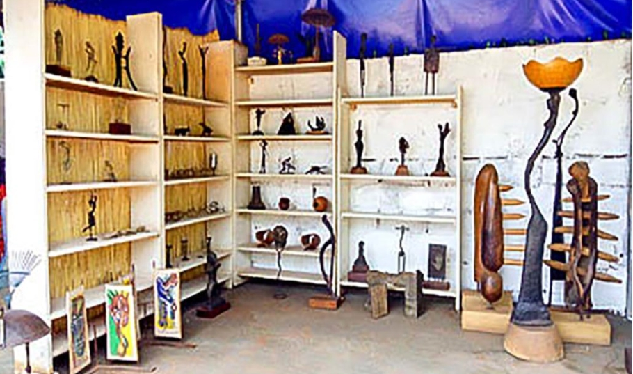

Description du Centre artistique Taba
Taba atelier Kossy Traore
Originaire de Bobo-Dioulasso, Kossi est un sculpteur qui pratique l'art de la sculpture en bronze depuis l'âge de 7 ans. Lecentre artistique propose également des stages d'apprentissage de la technique traditionnelle africaine, sur des périodes allant de quelques jours à plusieurs semaines. Le centre promeut également les métiers artistigues et artisanaux de Bobo-Dioulasso en organisant régulièrement des expositions et des ateliers permettant ainsi la découverte de l'art burkinabè.